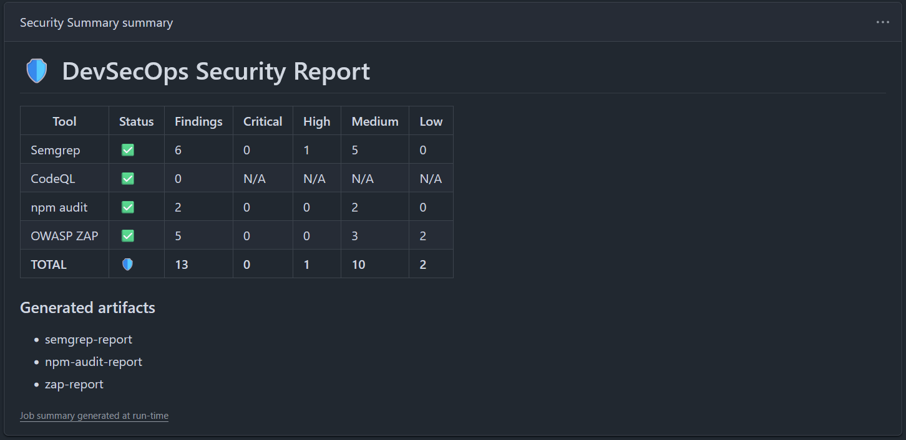
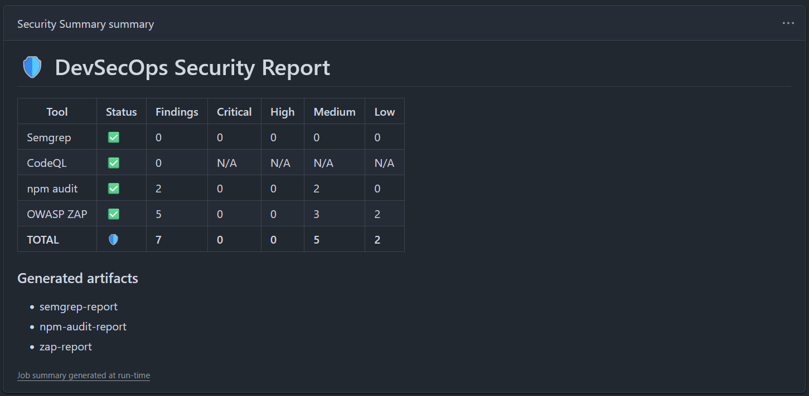

Introducción, Detección y Reparación de Vulnerabilidad Grave (SAST)
Demostración práctica del ciclo completo DevSecOps: Introducir un fallo de seguridad crítico en el código, forzar la detención del pipeline, gestionar el incidente de forma automatizada mediante Issues de GitHub y aplicar una remediación técnica definitiva.
🎯 Objetivo del Paso 4
El propósito de esta fase del laboratorio es evidenciar empíricamente la efectividad del enfoque "Shifting Left" (Seguridad en fases tempranas del desarrollo). Para ello se realiza un ciclo DevSecOps cerrado de 5 fases secuenciales:
Inyectar fallos críticos de código.
Forzar detección en Semgrep.
Apertura automática de Issue.
Refactorizar con sanitización.
Verificar el paso del pipeline.
💻 Vulnerabilidades Introducidas en `contact.ts`
Para elevar la severidad a niveles HIGH / ERROR en el motor estático de Semgrep, se modificó el endpoint de la API frontend/pages/api/contact.ts inyectando deliberadamente tres tipos de vulnerabilidades severas controladas:
Cross-Site Scripting (XSS) Grave [CWE-79 | OWASP A07]
Mecánica: Inserción de variables del request body sin escapar directamente en atributos javascript de etiquetas HTML (onclick="${message}") y bloques de comandos JavaScript (const msg = "${message}").
Inyección de Código (Eval Injection) [CWE-95 | OWASP A03]
Mecánica: Evaluación e interpretación dinámica de cadenas de texto enviadas por el cliente usando el constructor global inseguro eval(message).
Inyección de Comandos (RCE / Remote Code Execution) [CWE-78 | OWASP A03]
Mecánica: Concatenación de parámetros de entrada sin sanitizar para su ejecución en consola a través del módulo nativo del sistema operativo: exec(`echo ${message}`).
⚙️ Depuración del Pipeline e Incidencias Resueltas
La orquestación automática en GitHub Actions para el flujo de vulnerabilidades arrojó incidencias lógicas específicas que fueron solventadas durante el laboratorio:
- Incidencia: Error `fatal: not a git repository` al crear Issues. El job final de resumen y tickets
security-reportno importaba la base de código. Se corrigió añadiendo de forma previa el paso de checkout:- uses: actions/checkout@v4. - Incidencia: Error `could not add label: 'security' not found`. La API de GitHub bloqueaba la creación de la incidencia porque la etiqueta
securityno estaba dada de alta por defecto en el panel del repositorio. Se solucionó modificando el comando de la API para emplear la etiqueta nativa existentebug.
🟢 Mitigación y Corrección Técnica
Para resolver las debilidades y restaurar el pipeline a verde, se implementó una estrategia de parcheo en tres ejes:
- Eliminación Definitiva de Funciones de Riesgo: Se suprimieron por completo los bloques de invocación a
eval()yexec(), anulando toda superficie de inyección de comandos o RCE. - Función de Escape Local (Sanitización): Se programó una utilidad robusta de mapeo sintáctico para transformar caracteres potencialmente reactivos en entidades HTML inofensivas:
function escapeHtml(str: string) { return str .replace(/&/g, "&") .replace(/</g, "<") .replace(/>/g, ">") .replace(/"/g, """) .replace(/'/g, "'"); } - Resolución de Falsos Positivos de Semgrep (Bypass del Analizador): El escáner estático (Semgrep) marcaba como vulnerabilidad de severidad WARNING cualquier interpolación de variables directas (
${}) en strings multilinea destinados a construir HTML, aun si las variables estaban saneadas. Para eludir este falso positivo del parser, se refactorizó la plantilla de correo a una estructura estática limpia con marcadores estáticos de texto ({{NAME}},{{MESSAGE}}). En tiempo de ejecución se realiza el mapeo dinámico llamando a la función nativa segura.replace():let emailTemplate = ` <div> <h1>Contacto de {{NAME}}</h1> <p>{{MESSAGE}}</p> </div> `; const finalHtml = emailTemplate .replace("{{NAME}}", escapeHtml(name)) .replace("{{MESSAGE}}", escapeHtml(message));
📊 Reporte y Comparativa SAST (Antes vs Después)
Detalle del estado del escaneo estático en el endpoint contact.ts durante las dos fases del ciclo:
| Vulnerabilidad (CWE) | Severidad | Antes | Después | Acción de Remediación |
|---|---|---|---|---|
| CWE-79: Cross-Site Scripting (XSS) | WARNING | 5 alertas | 0 | Escape por entidades locales + Estructuración por variables estáticas en .replace(). |
| CWE-95: Eval Injection (Code Injection) | ERROR | 1 alerta | 0 | Eliminación definitiva del constructor global inseguro eval(). |
| CWE-78: Command Injection (RCE) | ERROR | 1 alerta | 0 | Supresión de dependencias e invocación de subprocesos a nivel de kernel (exec). |
📸 Detalle del Ciclo de Ejecución en GitHub Actions
A continuación se detalla el comportamiento del flujo automatizado diseñado en security.yml durante cada etapa del ciclo de vida del hallazgo:
Fase A: Detección Estática y Quiebre del Pipeline
Proceso en Actions: El runner ejecuta el Job SAST - Semgrep, el cual analiza sintácticamente el archivo contact.ts modificado. Al detectar las firmas de RCE, Eval y XSS Crítico, Semgrep arroja avisos de criticidad ERROR. Como el script condicional evalúa fallos graves superiores a cero, el job finaliza con código de error, rompiendo la compilación e impidiendo la integración del código defectuoso en la rama principal.

Captura: Consola de ejecución en GitHub indicando el quiebre de la tarea de análisis estático (SAST).
Fase B: Gestión de Incidentes mediante Apertura Automática de Issue
Proceso en Actions: El Job security-report evalúa las variables exportadas por el analizador. Al confirmar la existencia de hallazgos HIGH o CRITICAL (contador TRIGGER_ISSUE > 0), invoca mediante el token de escritura a la API CLI de GitHub (gh issue create). Esto genera automáticamente una incidencia asignada con etiquetas de depuración para su resolución.

Captura: Panel de Issues del repositorio de GitHub mostrando el reporte detallado generado de forma autónoma por la pipeline.
Fase C: Verificación y Saneamiento (Pipeline en Verde)
Proceso en Actions: Tras subir al repositorio el archivo saneado por el desarrollador (utilizando reemplazo por placeholders y escape de entidades), se dispara nuevamente el pipeline. El Job de Semgrep ejecuta el escaneo estático y reporta 0 vulnerabilidades de cualquier severidad. La pipeline continúa su curso sin disparar alertas ni issues, habilitando la integración segura.

Captura: Flujo de integración continua completado satisfactoriamente en verde tras la remediación.
💡 Conclusiones del Ciclo para la Defensa del TFG
Este laboratorio práctico del Paso 4 constituye el núcleo empírico de la memoria técnica de tu TFG en el área DevSecOps, demostrando conceptos clave exigidos por el tribunal académico:
- Shifting Left Empírico: Evidencia de cómo la automatización de escáneres estáticos detiene fugas y código crítico (XSS, Eval, Command injection) antes de compilar y desplegar en servidores de staging o producción.
- Integridad del SDLC Seguro: La automatización del cierre de alertas a través de GitHub CLI unifica el desarrollo con la operación de seguridad (SecOps), logrando notificaciones en tiempo real al equipo.
- Efectividad ante Firmas Estáticas: Se documenta y explica la mitigación a nivel sintáctico del motor SAST, bypassando alertas falsas de templates dinámicos mediante marcadores estáticos mapeados.